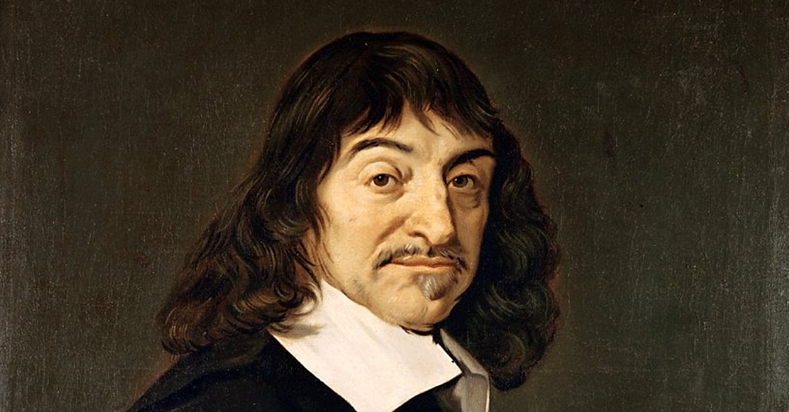
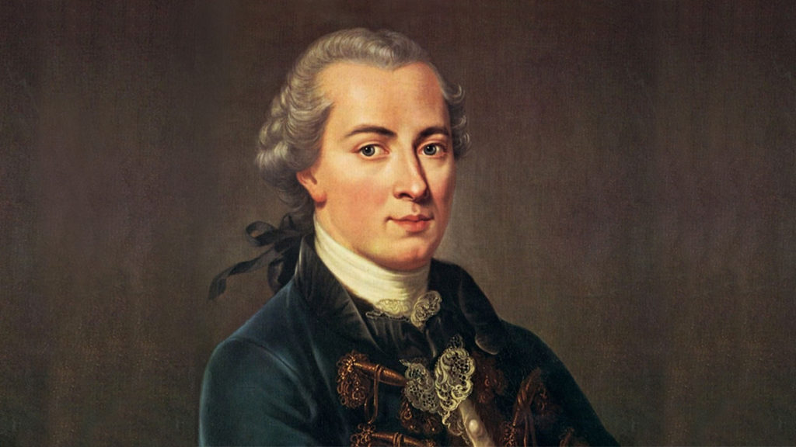

What is Skepticism?
Skepticism is a philosophical approach that questions the possibility of certainty in knowledge. It suggests that we should not accept claims to knowledge without sufficient evidence or justification. In simple terms, skeptics argue that we should be cautious about what we believe, as many things we take for granted could be uncertain or even false. Skepticism does not mean rejecting all beliefs; rather, it encourages a careful examination of the reasons behind those beliefs. This philosophical viewpoint has roots in ancient philosophy and continues to be relevant in contemporary discussions about knowledge, truth, and belief.
For example, a skeptic might ask, "How do we know that the world around us is real?" This question leads to deeper inquiry about our senses and the reliability of our perceptions. If someone sees a tree in front of them, a skeptic would challenge them to consider whether their senses might be deceiving them, or whether the tree could be an illusion. This line of questioning highlights the core of skepticism: the idea that our understanding of the world is not always certain, and we should seek strong evidence before accepting something as true.
Why is it essential to learn Skepticism?
One of the primary reasons to learn skepticism is that it encourages critical thinking. Critical thinking is the ability to analyze information, evaluate arguments, and form reasoned conclusions. In a world filled with information from various sources—social media, news outlets, and even conversations with friends—being skeptical helps us to sift through what we hear and see. Instead of accepting information at face value, a skeptic will ask questions like, “What evidence supports this claim?” or “Are there alternative explanations?” This approach not only helps in evaluating the truthfulness of claims but also strengthens our decision-making skills. When we think critically, we become better at recognizing biases, fallacies, and misinformation, which is particularly important in today's fast-paced information age where not everything we read or hear is accurate or true. For example, consider a news article that claims a new health trend is "guaranteed" to help people lose weight. A skeptical individual would research the sources cited in the article, look for scientific studies that back the claims, and consult expert opinions before deciding whether to believe the article. This habit of questioning and researching fosters a more informed and rational approach to consuming information, leading to more thoughtful and responsible decisions in everyday life.
Learning skepticism also promotes open-mindedness. When we embrace skepticism, we open ourselves to various perspectives and possibilities rather than getting stuck in a rigid mindset. This means being willing to consider different viewpoints and to recognize that our beliefs might be challenged or changed. Open-mindedness is crucial for personal growth, as it allows us to learn from others and adapt our views based on new evidence or arguments. In discussions or debates, being skeptical helps us to listen actively and engage respectfully, which can lead to more productive conversations. For instance, in a debate about climate change, a skeptic would listen to arguments from both sides. Instead of dismissing an opposing view outright, they would consider the evidence and reasoning behind it. This openness can lead to a deeper understanding of the complexities surrounding the issue and may even challenge one’s existing beliefs. As a result, learning skepticism fosters a mindset where curiosity thrives, enabling us to seek knowledge actively and appreciate the richness of diverse opinions and experiences.
Another significant reason to learn skepticism is that it enhances personal empowerment. When we learn to question and analyze the information around us, we become less susceptible to manipulation or influence from others. This sense of empowerment allows us to take charge of our own beliefs and decisions, rather than simply accepting what we are told by authority figures, media, or popular opinion. Being skeptical means that we become active participants in our own understanding of the world, which can lead to greater confidence in our judgments. For example, consider a situation where someone is pressured to follow a popular trend, like a specific diet or lifestyle change. A skeptical person might pause and ask, “Why should I believe this is the best choice for me? What evidence do I have that it works?” By doing this, they reclaim their agency in making choices that align with their values and needs rather than just conforming to societal pressures. This empowerment leads to a more fulfilling life, where decisions are based on thoughtful analysis rather than blind acceptance, ultimately fostering a greater sense of autonomy and satisfaction in one’s life choices.
Main Concepts
Academic Skepticism
Academic skepticism, originating in ancient Greece, is a school of thought that posits that knowledge is not attainable. This form of skepticism is rooted in the teachings of the Academic philosophers, particularly the later members of Plato’s Academy. The central tenet of academic skepticism is that, while we can have opinions (doxa) about the world, we cannot achieve true knowledge (episteme). Academic skeptics argue that every belief can be countered with an opposing belief, making certainty impossible.
For example, consider the debate about the existence of external objects. An academic skeptic might point out that we can never be entirely sure that what we perceive is real and not an illusion. They would argue that our senses can deceive us, and thus, we cannot claim knowledge of the external world with absolute certainty. This form of skepticism challenges us to reconsider the foundations of our beliefs and to accept that our understanding of reality may always be limited and uncertain. More about Academic Skepticism
Pyrrhonian Skepticism
Pyrrhonian skepticism, named after the ancient Greek philosopher Pyrrho, is characterized by a radical form of skepticism that advocates for suspension of judgment (epoché) regarding beliefs and propositions. Pyrrhonian skeptics assert that for any claim, one can find equally valid counterclaims. This leads them to conclude that we should suspend belief altogether on most matters. The Pyrrhonian skeptic adopts a practical attitude, focusing on achieving tranquility (ataraxia) by not committing to any belief system.
For instance, in discussing ethical principles, a Pyrrhonian skeptic would argue that there are numerous conflicting moral theories (e.g., utilitarianism vs. deontological ethics) that all have their merits and shortcomings. Rather than choosing one moral framework over another, the skeptic might choose to remain agnostic about moral claims altogether. By suspending judgment, they aim to reduce anxiety and discomfort that can arise from holding strong beliefs in the face of conflicting evidence or viewpoints. More about Pyrrhonian Skepticism
Skeptical Arguments against Knowledge
Skeptical arguments against knowledge focus on challenging the very concept of knowledge itself. One of the most famous arguments is the "Gettier Problem," proposed by philosopher Edmund Gettier in 1963. Gettier presented scenarios in which individuals have justified true beliefs that would typically be regarded as knowledge but are not genuinely knowledge due to luck or coincidence. This raised questions about the traditional definition of knowledge as justified true belief.
For example, consider a scenario where a person sees what they believe to be a clock showing the correct time, leading them to conclude it is 3 PM. Unbeknownst to them, the clock is actually broken, yet it happens to be 3 PM. Here, the individual has a justified belief (they see a clock) and that belief is true (it is indeed 3 PM), but they do not have knowledge because their justification is flawed. The Gettier Problem illustrates that having a justified true belief does not necessarily equate to possessing knowledge, thereby deepening skepticism about what constitutes true knowledge.
The Brain in a Vat Hypothesis
The "Brain in a Vat" hypothesis is a modern skeptical argument that explores the nature of reality and perception. It posits a scenario where a person's brain is removed from their body and placed in a vat of nutrients, connected to a supercomputer that simulates reality. This thought experiment raises questions about whether we can ever know if we are genuinely experiencing the world around us or if we are merely receiving false sensory inputs from a computer.
For instance, if someone believes they are walking in a park but is actually a brain in a vat being stimulated to perceive that experience, how can they claim to know anything about the external world? The Brain in a Vat hypothesis serves as a contemporary challenge to epistemology, prompting reflection on the reliability of our senses and the nature of reality itself. It emphasizes that, without certainty in our perceptions, our knowledge about the world may always be questionable. More about Brain in a Vat hypothesis
Moral Skepticism
Moral skepticism is a specific branch of skepticism that questions the objectivity of moral knowledge. Moral skeptics argue that there are no objective moral truths, and therefore, our moral beliefs are merely subjective or culturally constructed. This perspective raises questions about the validity of ethical claims and whether moral judgments can be considered true or false.
For example, consider the debate over capital punishment. One group may argue that it is morally justified as a means of deterrence, while another group contends it is inherently wrong. A moral skeptic would argue that both positions lack objective grounding; they are ultimately based on personal beliefs, cultural values, or emotional responses rather than an objective moral truth. This challenges the idea of moral absolutes and suggests that our moral convictions may be more relative than we often assume. More about Moral Skepticism
Influential Philosophers
Sextus Empiricus (c. 160–210 CE)
Sextus Empiricus is often regarded as one of the most important figures in ancient skepticism, providing a systematic account of Pyrrhonian skepticism, which emphasizes the suspension of judgment and the pursuit of tranquility. His writings form the foundation of later skeptical thought, particularly in the Western philosophical tradition. In his key works, Outlines of Pyrrhonism and Against the Mathematicians, Sextus articulates the methods of skeptical inquiry and argues against dogmatic beliefs. He presents various arguments that highlight the limitations of human knowledge and the need to maintain a state of equipoise regarding conflicting opinions. By advocating for the suspension of judgment, Sextus offers a path to achieving peace of mind, making his contributions essential for understanding the development of skepticism throughout history. More about Sextus Empiricus
Cr.: Mister Prepa
Rene Descartes
René Descartes is a central figure in modern philosophy who engaged deeply with skepticism. He famously employed skeptical arguments to establish a foundation for knowledge, leading to his famous conclusion: "Cogito, ergo sum" (I think, therefore I am). In his seminal work, Meditations on First Philosophy, Descartes uses skepticism as a methodological tool, systematically doubting everything he can until he arrives at an indubitable truth. This process of radical doubt allows him to explore the nature of existence and the reliability of perception, ultimately establishing a new epistemological framework that responds to skepticism. Descartes' explorations and conclusions laid the groundwork for modern epistemology and profoundly influenced subsequent philosophical thought. More about Rene Descartes
Cr.: World History Encyclopedia
David Hume
David Hume, an empiricist philosopher, introduced a form of skepticism that specifically questioned causality and induction. His skepticism challenges the certainty of knowledge derived from experience, emphasizing the limitations of human understanding. In his influential work, An Enquiry Concerning Human Understanding, Hume argues that our beliefs about causation are not rationally justified and are instead based on habit and custom. He famously critiques the principle of induction, raising doubts about our ability to know anything beyond immediate experiences. Hume's skepticism has significant implications for knowledge, science, and philosophy, as it prompts a reevaluation of how we acquire knowledge and the foundations upon which we build our beliefs. More about David Hume
Cr.: Aeon
Immanuel Kant
Immanuel Kant responded to skepticism by proposing a critical philosophy that sought to reconcile rationalism and empiricism. He acknowledged the challenges posed by skepticism while arguing for the limits of human reason and the conditions for the possibility of knowledge. In his key work, Critique of Pure Reason, Kant posits that while we cannot know things as they are in themselves (noumena), we can have knowledge of the world as it appears to us (phenomena). His critical approach aims to address skepticism about our capacity for knowledge and emphasizes that while our understanding is limited, it is still possible to attain knowledge within those limits. Kant's work significantly shaped modern epistemology and influenced various philosophical discussions about the nature of knowledge. More about Immanuel Kant
Cr.: Kalampedia
Friedrich Nietzsche
Friedrich Nietzsche's work engages with skepticism in terms of morality, truth, and the nature of existence. His philosophy questions the foundations of truth and the motivations behind belief systems. In his essay, On Truth and Lies in a Nonmoral Sense, Nietzsche critiques conventional notions of truth, suggesting that what we consider "truth" is merely a set of metaphors and social constructs. He argues that our understanding of truth is influenced by power dynamics and subjective experiences, leading to a radical skepticism about the objectivity of knowledge. Nietzsche's insights into the nature of truth and belief challenge traditional epistemological assumptions and encourage a more skeptical and flexible approach to understanding knowledge. More about Nietzsche

Cr.: Medium, Stephan Thomas Kirschner
Research and Theories
Sextus Empiricus and Outlines of Pyrrhonism
One of the foundational texts in the history of skepticism is Outlines of Pyrrhonism by Sextus Empiricus. Written in the second century CE, this work outlines the principles of Pyrrhonian skepticism, which emphasizes withholding judgment on beliefs. Sextus argues that for every argument, there is an equal and opposite argument, leading to a state of suspension of belief, known as epoché. He provides various modes of skepticism, demonstrating that human beings cannot attain absolute certainty about knowledge. For example, he illustrates that while people believe they know something, there are always counterarguments that cast doubt on that knowledge. By advocating for epoché, Sextus promotes a path to mental tranquility, arguing that by suspending judgment, one can achieve peace of mind, which is a significant contribution to philosophical thought about knowledge and belief.
René Descartes and Meditations on First Philosophy
René Descartes’ Meditations on First Philosophy, published in 1641, is another crucial work that engages with skepticism. In this text, Descartes employs a method of radical doubt, where he questions everything he previously accepted as true, including his own existence. He famously argues that even if he doubts everything, the very act of doubting indicates that there must be a thinker who doubts. This leads to his conclusion, "Cogito, ergo sum" (I think, therefore I am). Descartes uses skepticism as a tool to strip away uncertainties and arrive at foundational truths. By establishing the certainty of his own existence and the existence of a benevolent God, Descartes seeks to build a secure foundation for knowledge. His approach not only addresses skepticism but also lays the groundwork for modern epistemology by illustrating how doubt can lead to clarity and certainty. More about Meditations on First Philosophy
David Hume and An Enquiry Concerning Human Understanding
In An Enquiry Concerning Human Understanding, published in 1748, David Hume presents a thorough critique of human knowledge and causality. Hume questions the validity of induction, which is the process of deriving general principles from specific observations. For instance, he notes that just because the sun has risen every day in the past, it does not guarantee that it will rise again tomorrow. This skepticism about induction challenges the basis of scientific reasoning and empirical knowledge. Hume argues that our beliefs in cause and effect are not based on rational justification but rather on habits of thought and custom. His work encourages a re-examination of how knowledge is constructed and raises important questions about the limitations of human understanding, marking a significant moment in the history of skepticism and philosophy.
Kant’s Critique of Pure Reason
Immanuel Kant’s Critique of Pure Reason, published in 1781, addresses skepticism by proposing a new way of understanding knowledge. Kant acknowledges the skepticism of his predecessors but argues that while we cannot know things as they are in themselves (noumena), we can have knowledge of things as they appear to us (phenomena). He introduces the concept of “transcendental idealism,” asserting that our understanding of the world is shaped by the structures of our mind. For example, Kant argues that space and time are not properties of objects but rather forms of intuition that help us organize our experiences. This perspective allows Kant to bridge the gap between rationalism and empiricism, demonstrating that while skepticism about absolute knowledge is valid, we can still have reliable knowledge within the limits of human experience. More about Critique of Pure Reason
Hilary Putnam and Reason, Truth, and History
Hilary Putnam’s Reason, Truth, and History, published in 1981, presents a pragmatic approach to skepticism that questions the traditional notions of truth and objectivity. Putnam argues against radical skepticism by emphasizing that knowledge is not solely about representing an objective reality but is deeply intertwined with human practices and social contexts. For example, he critiques the idea that there can be a “God’s eye view” of the world, asserting that our understanding of truth is influenced by the linguistic and cultural frameworks we operate within. Putnam’s work encourages a view of knowledge as dynamic and contingent, challenging the rigid structures often associated with skepticism. His contributions highlight the importance of context in shaping our beliefs and understanding, providing a more nuanced perspective on skepticism in contemporary philosophy.
Facts about Skepticism
While many associate skepticism with modern philosophers like Descartes and Hume, its roots trace back to ancient Greek philosophy, particularly the Pyrrhonists. Founded by Pyrrho of Elis in the 4th century BCE, Pyrrhonian skepticism emphasized the suspension of judgment (epoché) and sought tranquility through doubt. Pyrrho and his followers believed that because human senses and reasoning can be misleading, one should refrain from making definitive assertions about knowledge. This ancient approach laid the groundwork for later philosophical discussions about the limits of human understanding and the nature of truth, showcasing how skepticism has been a significant component of philosophical thought for centuries.
Skepticism is often perceived as a purely philosophical or negative stance towards knowledge, but it has also played a crucial role in the development of the scientific method. Skeptical inquiry encourages questioning assumptions, scrutinizing evidence, and demanding rigorous proof before accepting claims as true. This methodological skepticism was embraced by early scientists, such as Galileo Galilei and Francis Bacon, who advocated for questioning traditional beliefs and relying on empirical evidence. By fostering a culture of inquiry, skepticism has driven scientific progress and helped separate scientific reasoning from dogmatic beliefs, reinforcing the importance of critical thinking in the pursuit of knowledge.
Skepticism has had a profound impact on religious philosophy and theology. Throughout history, skeptics have questioned religious dogmas, leading to significant shifts in how people understand faith and belief. For instance, during the Enlightenment, figures like David Hume raised doubts about the rational foundations of religion, challenging the notion of miracles and the reliability of religious experiences. This questioning laid the groundwork for modern theological debates and the rise of secularism, where beliefs are often scrutinized against empirical evidence. As a result, skepticism has contributed to the diversification of religious thought, encouraging a more nuanced and critical approach to faith.
While skepticism is often discussed in academic contexts, it also plays a vital role in everyday decision-making and beliefs. People frequently engage in skeptical thinking when evaluating news sources, advertisements, and social media information. The rise of misinformation and “fake news” in the digital age has made skepticism a necessary tool for discerning fact from fiction. Individuals who practice skepticism in their daily lives are more likely to question the credibility of sources, seek evidence before forming opinions, and remain open to revising their beliefs based on new information. This practical application of skepticism underscores its importance beyond philosophical discourse, shaping how individuals navigate the complexities of modern life.
A lesser-known aspect of skepticism is its inherent paradox: the more one engages in skeptical inquiry, the more difficult it can become to attain certainty in any belief. This paradox is exemplified by the “Agrippa's Trilemma,” which suggests that every justification for knowledge can be challenged, leading to an infinite regress of questions. The trilemma outlines three options: circular reasoning, where a belief relies on itself for justification; foundationalism, where beliefs rest on unproven assumptions; or infinite regress, where beliefs require further justifications ad infinitum. This paradox raises profound questions about the nature of knowledge and belief, prompting individuals to reflect on the limitations of certainty in their own understanding of the world. Thus, the paradox highlights the complex relationship between skepticism and knowledge, inviting deeper exploration of the boundaries of human comprehension.
Quiz
1. How did the Hubble Deep Field observation in 1995 change our understanding of the universe?
2. Describe one contribution of ancient Babylonians to early astronomy.
3. Explain the impact of the Islamic Golden Age on the development of astronomy during the medieval period.
4. How did the heliocentric model proposed by Copernicus revolutionize our understanding of the solar system?
5. What are some of the key research areas in contemporary astronomy, and why are they significant?